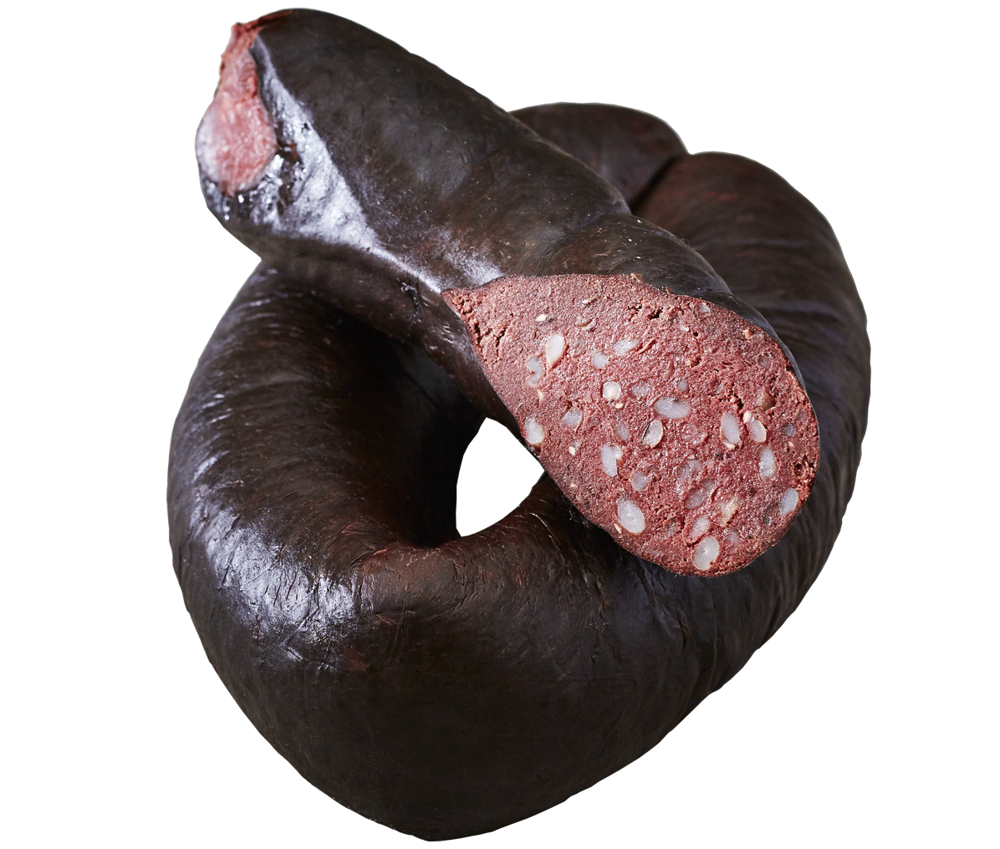

Black pudding

Description
People—not just the Irish—have been eating blood puddings for centuries, in cultures all around the world.
No Irish fry is truly complete without at least a slice of black and a slice of white pudding.
And it's not just for breakfast anymore. Talented Irish chefs have found ways to incorporate it into salads and main dishes.
Black pudding recipe vary wildly throughout Ireland; some include barley, breadcrumbs, and flour,
but oatmeal is the old-fashioned thickener. Be sure it's steel-cut or pinhead oatmeal, and cook it until just tender.
Individual nubs of oats should be visible in the final product. Store-bought versions will always be made in sausage casings,
unlike this recipe, packed into a loaf pan.
Ingredients
- 4 cups fresh pig's blood
- 2 1/2 teaspoons salt
- 1 1/2 cups steel-cut (pinhead) oatmeal
- 2 cups finely diced pork fat (or beef suet), finely chopped
- 1 large yellow onion, finely chopped
- 1 cup milk
- 1 1/2 teaspoons freshly ground black pepper
- 1 teaspoon ground allspice
Steps
- Preheat the oven to 325°F and grease 2 glass loaf pans. (If you don't have glass loaf pans, line metal loaf pans with parchment to keep the blood sausage from reacting with the metal and creating an off-flavor.) Stir 1 teaspoon of salt into the blood.
- Bring 2 1/2 cups water to a boil and stir in the oats. Simmer, stirring occasionally, for 15 minutes, until just tender, not mushy.
- Pour the blood through a fine sieve into a large bowl to remove any lumps. Stir in the fat, onion, milk, pepper, allspice and remaining 1 1/2 teaspoons salt. Add the oatmeal and mix to combine. Divide the mixture between the loaf pans, cover with foil, and bake for 1 hour, until firm. Cool completely. Seal in plastic wrap and wither freeze for extended use or store in the refrigerator for up to a week.
- To serve, cut a slice about 1/2-inch thick off the loaf. Fry in butter or oil until the edges are slightly crisped and browned.
Return to home page